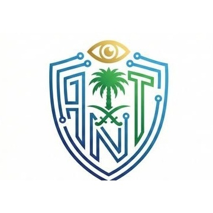

استعادة حساب تويتر
يشمل ذلك استرجاع حساب تويتر أو X المخترق أو المفقود أو الذي تم تغيير بياناته.

الرياض، حي الربيع
يوميًا من 2:30 مساءً إلى 12:00 منتصف الليل
(مغلق أيام الجمعة والإجازات الرسمية)
خدمات متخصصة في استعادة حساب تويتر، استعادة حساب تويتر موقوف نهائي، استرجاع حسابات إنستغرام وسناب شات وتيك توك وفيسبوك وواتساب وتليجرام، مع مكافحة الابتزاز وتأمين الحسابات المخترقة والموقوفة.
لتحسين ظهور الموقع في نتائج البحث بشكل طبيعي، تم توسيع المحتوى ليشمل أبرز العبارات التي يستخدمها الباحثون عند مواجهة مشاكل الحسابات أو الابتزاز أو الإيقاف النهائي.
يشمل ذلك استرجاع حساب تويتر أو X المخترق أو المفقود أو الذي تم تغيير بياناته.
مراجعة أسباب الإيقاف وتجهيز مسار المعالجة المناسب للحسابات المقيدة أو الموقوفة.
خدمات استعادة الحسابات المخترقة أو المفقودة على إنستغرام وسناب شات مع تحسين الأمان بعد الاسترداد.
حلول مخصصة للحسابات الموقوفة أو المخترقة أو التي فقدت وسائل الاسترداد المرتبطة بها.
المساعدة في مشاكل تسجيل الدخول، فقدان الوصول، أو تغيير بيانات الاتصال الأساسية.
ترتيب الأدلة، تقليل التصعيد، دعم حذف المحتوى المسيء، وتأمين الحسابات المرتبطة بالقضية.
محتوى تعريفي يخدم الباحثين عن هكر أخلاقي موثوق وحقيقي داخل السعودية لحل المشاكل التقنية الحساسة.
مراجعة كلمات المرور، وسائل الاسترداد، والتحقق بخطوتين لتقليل تكرار المشكلة مستقبلاً.
ملاحظة: العملاء يدفعون الرسوم فقط بعد الانجاز .. بينما العملاء الجدد و المتعاملين معنا لاول مره يجب توفير ضمان بسيط لكي يتم اعتمادهم و الدفع بعد الانجاز ..او انه سيتم دفع 50% اثناء العمل و تحديدا عند اكمال 50% منه و توثيق ذلك